Линейная регрессия
Полный конспект, с определениями и выводом нормальных уравнений, лежит в PDF output/pdf/МЕТОДИЧКА_ПАРЫ_2.pdf. Эта страница короче и без промежуточных выкладок.
1. Откуда имя
Фрэнсис Гальтон в 1885–1886 годах сравнивал рост родителей и взрослых сыновей. Крайний родитель в среднем имел сына ближе к середине популяции. Наклон этой связи у него был около \(2/3\): сын сдвигается от среднего примерно на две трети того, насколько от среднего сдвинулся родитель. Отсюда слово регрессия.
Рост матери перед усреднением умножали примерно на \(1{,}08\), чтобы привести его к мужской шкале, и брали среднее двух родителей. Это условное среднее, а не биологическая сила, которая «тянет род к посредственности».
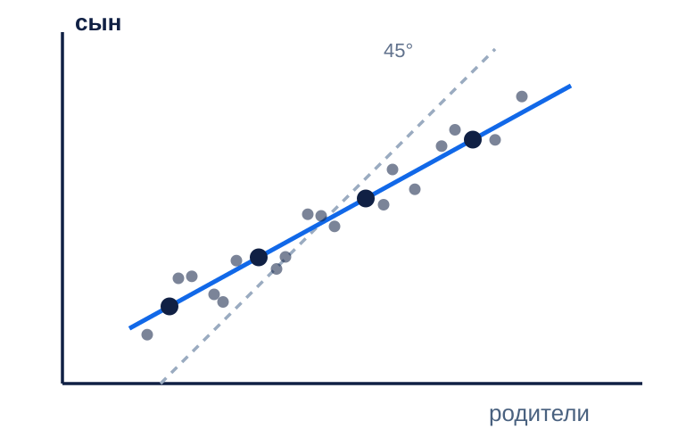
Тот же эффект виден без биологии. Если отобрать людей с очень высоким первым измерением, второе измерение в среднем ближе к середине, даже когда никакого лечения не было. Связь двух измерений неидеальна, поэтому условное среднее откатывается.
2. Виды регрессии
Регрессия предсказывает одно число. У этого слова четыре частых названия. Сегодня нужны первые два.
| Название | Своими словами | Один пример |
|---|---|---|
| Простая линейная | одно число по одному признаку | 20 + 2×площадь. 40 м² дают 100 |
| Множественная | несколько признаков, на выходе всё равно одна цена | 20 + 2×площадь + 3×этаж. 40 м² и 5 этаж дают 115 |
| Полиномиальная | та же цена, но среди признаков есть квадрат площади | график гнётся. Считается так же, не сегодня |
| Логистическая | ответ не цена, а «купит» или «не купит» | к этой лекции не относится |
Отдельный вопрос: какое одно число поставить вместо списка ответов 2, 2, 3, 10.
Среднее: (2+2+3+10)/4 = 4,25. Десятка уже сдвинула ответ. Медиана: середина упорядоченного списка, между 2 и 3, то есть 2,5. Десятка на неё почти не влияет. Порог 90%: число, которое не меньше хотя бы 90% этих ответов. 90% от четырёх — это почти все четыре, поэтому порог равен 10.
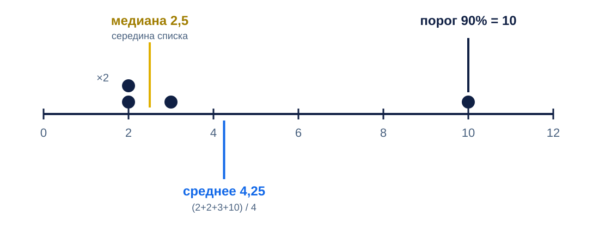
3. Модель
Прогноз одного объекта — скалярное произведение признаков и весов:
\[ \hat y = w_0 + w_1 x_1 + \cdots + w_d x_d = x^{\top} w. \]Свободный член \(w_0\) — это вес при признаке, который всегда равен единице. Для \(n\) объектов те же веса пишутся матрицей:
\[ \hat y = Xw. \]В \(X\) строк столько, сколько объектов. Первый столбец — единицы, дальше столбцы признаков. Линейность здесь по весам: признаки можно заранее заменить на квадраты, логарифмы или индикаторы, и модель останется линейной по \(w\).
One-hot и one-cold
Район — не число. Коды \(1,2,3\) модель прочитает как порядок и равные шаги между районами. One-hot даёт отдельный столбец на каждый район: в строке одна единица. One-cold — дополнение: в каждой клетке ноль и единица меняются местами.
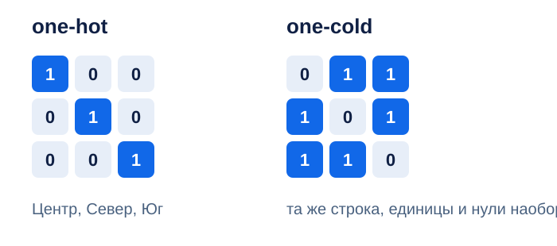
Оба полных кода вместе со столбцом единиц линейно зависимы. У one-hot столбцы суммируются в столбец единиц. У one-cold для трёх районов сумма столбцов равна удвоенному столбцу единиц. Матрица \(X^{\top}X\) вырождена, и веса не единственны.
Рабочий вариант со свободным членом — выбросить один уровень. Вес оставшегося района читается как разница с выброшенным опорным, а не как «эффект района сам по себе». Словарь уровней строят только по train: район, которого не было при обучении, не получает столбец.
4. Нормальные уравнения
МНК ищет веса, которые минимизируют сумму квадратов остатков на тех строках, по которым его учат:
\[ Q(w)=\|y-Xw\|^{2}. \]Градиент равен \(-2X^{\top}(y-Xw)\). В нуле градиента
\[ X^{\top}X\, w = X^{\top} y. \]Гессиан \(2X^{\top}X\) положительно полуопределён, поэтому критическая точка — минимум. Если \(X\) полного столбцового ранга, решение одно:
\[ \hat w = (X^{\top}X)^{-1} X^{\top} y. \]Обратную матрицу на практике не собирают. Систему решают через SVD или QR. Число обусловленности \(X^{\top}X\) — квадрат числа обусловленности \(X\), поэтому явное обращение усиливает шум.
Если столбцы зависимы, прогнозы \(X\hat w\) всё ещё могут быть единственными, а набор весов — нет. Две разные записи \(w\) дают одну и ту же прямую.
Три точки на доске
Признак \(x\in\{1,2,3\}\), ответы \(y\in\{1,2,2\}\). Средние \(\bar x=2\), \(\bar y=5/3\). Матрица плана и система:
\[ X=\begin{pmatrix}1&1\\1&2\\1&3\end{pmatrix},\quad \begin{cases}3w_0+6w_1=5\\6w_0+14w_1=11\end{cases} \]Решение: сдвиг \(w_0=2/3\), наклон \(w_1=1/2\). Прогнозы \(7/6\), \(5/3\), \(13/6\). Остатки \(-1/6\), \(+1/3\), \(-1/6\). Сумма остатков нулевая, потому что в \(X\) есть столбец единиц: остаток ортогонален этому столбцу.
5. Геометрия
Вектор ответов \(y\) живёт в \(\mathbb R^{n}\). Столбцы \(X\) натягивают подпространство. МНК берёт в этом подпространстве ближайшую к \(y\) точку \(X\hat w\). Остаток перпендикулярен каждому столбцу:
\[ X^{\top}(y-X\hat w)=0. \]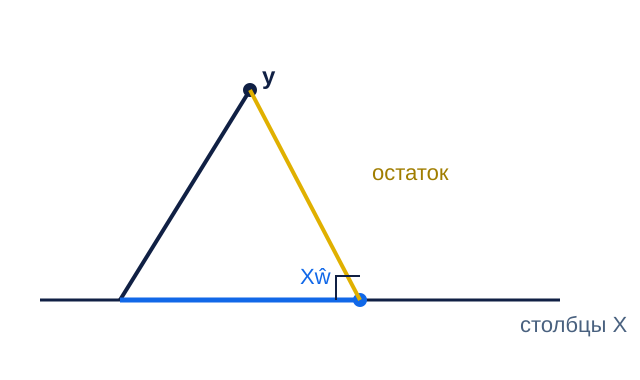
Для центрированного ответа квадраты раскладываются по Пифагору:
\[ \|y-\bar y\mathbf 1\|^{2}=\|X\hat w-\bar y\mathbf 1\|^{2}+\|y-X\hat w\|^{2}. \]\(R^{2}\) — доля первого слагаемого справа в левой части. Это доля объяснённой суммы квадратов, не доля верных ответов.
6. Что вес означает и чего не означает
При полном ранге, верной формуле условного среднего, экзогенности и сферических ошибках МНК — лучшая линейная несмещённая оценка. Это теорема Гаусса–Маркова. Нормальность шума для неё не нужна: нормальность нужна, чтобы МНК совпал с максимумом правдоподобия.
Неодинаковый разброс ошибок часто сохраняет несмещённость и ломает эффективность. Признак, который сам зависит от ошибки, смещает веса. Коэффициент «при прочих равных» — утверждение внутри модели. Он не становится причинным эффектом от того, что уравнение решено. Вес после стандартизации признака — не «рубли на метр».
7. Метрики
Функция, по которой ищут \(w\), и число, которое показывают в отчёте, могут различаться. Ниже \(m\) — число объектов в той выборке, по которой метрику считают. На лекции \(m=3\) и это train.
MSE
\[ \mathrm{MSE}=\frac1m\sum_{j=1}^{m}(y_j-\hat y_j)^{2}. \]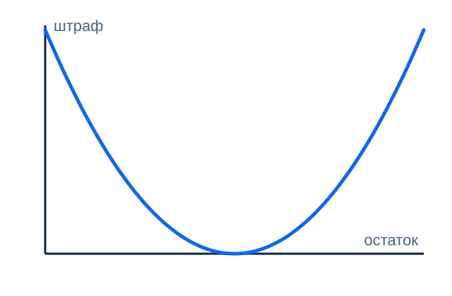
Лучшая константа — среднее train. На трёх точках у прямой MSE \(=1/18\), у одного среднего \(2/9\).
Прямая на train не может проиграть среднему по MSE: среднее — МНК в подпространстве из одного столбца единиц.
RMSE
\[ \mathrm{RMSE}=\sqrt{\mathrm{MSE}}. \]Корень возвращает порядок величины \(y\), но это не средняя абсолютная ошибка. Крупный промах по-прежнему весит больше, чем в модуле.
MAE
\[ \mathrm{MAE}=\frac1m\sum_{j=1}^{m}|y_j-\hat y_j|. \]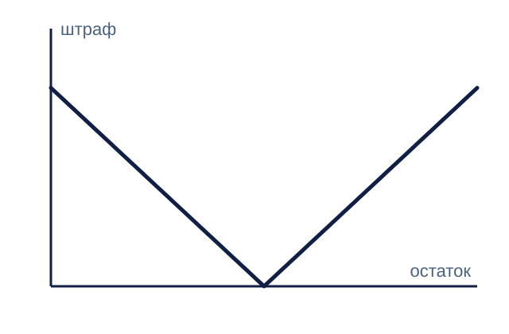
Лучшая константа — медиана, не среднее. На трёх точках у прямой MAE \(=2/9\), у среднего \(4/9\). МНК этого выигрыша не обещает: веса искали квадратом.
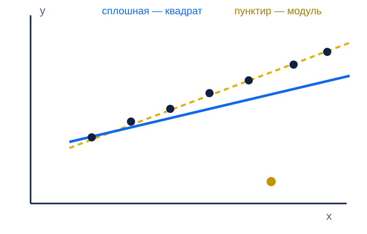
\(R^{2}\)
\[ R^{2}=1-\frac{\sum(y_j-\hat y_j)^{2}}{\sum(y_j-\bar y)^{2}}. \]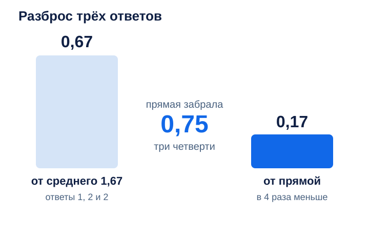
Ноль значит «не лучше выбранной константы», не «ноль точности». На новых данных \(R^{2}\) бывает отрицательным. r2_score в sklearn берёт среднее того \(y\), который ему передали, часто это test. Сравнение со средним train — другая процедура.
Скорректированный \(R^{2}\)
\[ R^{2}_{\mathrm{adj}}=1-(1-R^{2})\frac{n-1}{n-p}. \]Здесь \(p\) — число столбцов, включая единицы. На трёх точках при \(p=2\) получается \(1/2\). Штраф считают на train. Это не замена validation. Сравнивать так модели с разными преобразованиями \(y\) нельзя: знаменатель другой.
MAPE и sMAPE
\[ \mathrm{MAPE}=\frac1m\sum_{j=1}^{m}\frac{|y_j-\hat y_j|}{|y_j|},\qquad \mathrm{sMAPE}=\frac1m\sum_{j=1}^{m}\frac{2|y_j-\hat y_j|}{|y_j|+|\hat y_j|}. \]На трёх точках MAPE прямой равен \(5/36\), MAPE среднего равен \(1/3\). MAPE не определена при \(y=0\). Лучшая константа для MAPE — взвешенная медиана с весами \(1/|y|\), её тянет к меньшим ответам. Множитель 2 в sMAPE — соглашение. Большой прогноз раздувает знаменатель, поэтому имя «симметричная» не отменяет перекос.
RMSLE
\[ \mathrm{RMSLE}=\sqrt{\frac1m\sum_{j=1}^{m}\bigl(\log(1+y_j)-\log(1+\hat y_j)\bigr)^{2}}. \]Недопрогноз \(100\to 50\) дороже, чем такой же по модулю перепрогноз \(100\to 150\). Отрицательные ответы не допускаются.
Pinball
\[ \rho_{\tau}(r)=\begin{cases}\tau r,& r\ge 0\\ (\tau-1)r,& r<0\end{cases},\quad r=y-\hat y. \]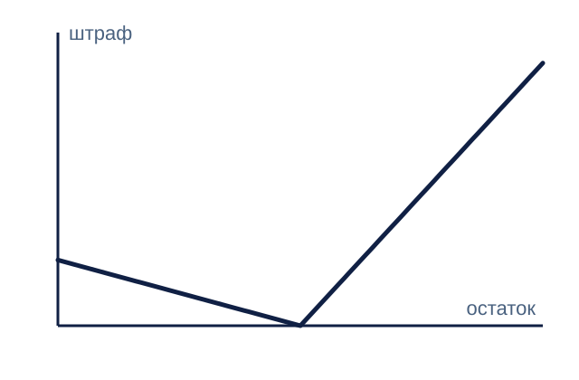
При \(\tau=1/2\) это половина модуля, оптимум по константе — медиана. При другом \(\tau\) оптимум — квантиль этого уровня. Это функция потерь под асимметричное решение, не синоним MAE.
Хьюбер
\[ H_{\delta}(r)=\begin{cases}\tfrac12 r^{2},& |r|\le\delta\\ \delta(|r|-\delta/2),& |r|>\delta\end{cases} \]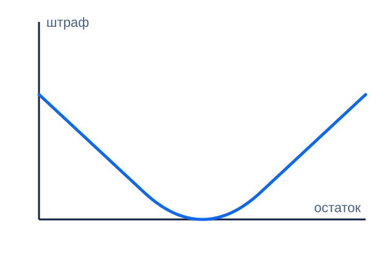
В нуле функция гладкая, хвост растёт линейно. Это loss для обучения. В отчёт кладут MAE или RMSE. Порог \(\delta\) выбирают по validation и на test уже не крутят.
Если учили логарифм цены
Пусть \(\log y = x^{\top}w+\varepsilon\) и шум нормальный. Тогда \(\exp(x^{\top}w)\) — медиана цены. Среднее больше:
\[ \mathbb E[y\mid x]=\exp(x^{\top}w+\sigma^{2}/2). \]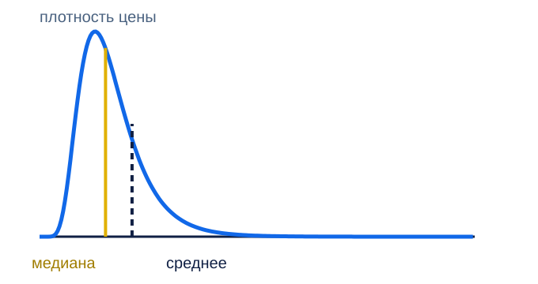
Сводка на трёх точках
| Метрика | Только среднее | Прямая МНК |
|---|---|---|
| MSE | 2/9 | 1/18 |
| MAE | 4/9 | 2/9 |
| \(R^{2}\) | 0 | 3/4 |
| MAPE | 1/3 | 5/36 |
8. Где эти числа имеют право жить
Уравнение решают на train. На validation выбирают состав столбцов, метрику отчёта и \(\delta\). Test — один отчёт уже выбранного решения. Правка после взгляда на test отменяет отчёт.
Отдельный пример, его не смешивают с тремя точками. Train-среднее ответов 6 и 14 равно 10, MAE константы на них равна 4. Прогнозы модели 7 и 13 дают MAE 1. Это иллюстрация validation, не продолжение доски.
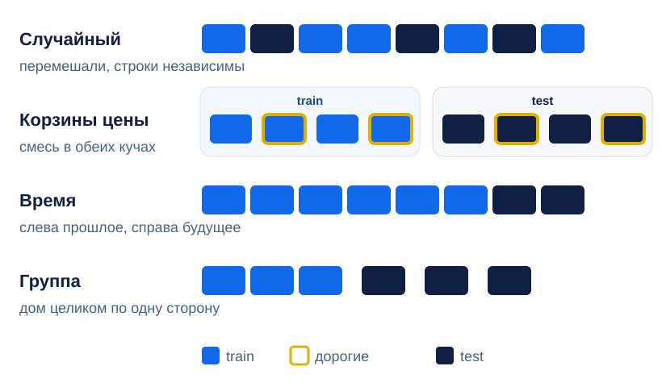
Обычный KFold честен только в первой ситуации. Для времени нужен разрез вроде TimeSeriesSplit, для групп — GroupKFold.
Пример со шкалой. Train: \(0,0,10\), test: \(10\). Среднее train равно \(10/3\). Среднее всех четырёх чисел равно 5. Второе использует test и в преобразование больше не годится.
9. Проверьте себя
- Почему one-hot из трёх районов вместе со свободным членом не даёт единственных весов?
- На точках \((1,1),\ (2,2),\ (3,2)\) сумма остатков МНК равна нулю. Какой столбец это гарантирует?
- Почему \(R^{2}=3/4\) на этих точках не является качеством модели?
- Модель учили квадратом и сообщили MAE. Это ошибка протокола или нормальная связка?
- Цены идут по дням. Что сломается, если строки перемешать перед
train_test_split? - После обучения на \(\log y\) взяли \(\exp(x^{\top}w)\). Это оценка среднего или медианы, и при каком шуме?
- Полиномиальная регрессия рисует кривую. Почему её всё ещё называют линейной моделью?
- Логистическая регрессия предсказывает число так же, как прямая МНК?
Ответы
- Столбцы one-hot суммируются в столбец единиц, ранг \(X\) меньше числа весов.
- Столбец единиц. Остаток ему ортогонален, значит сумма координат остатка нулевая.
- Считалось на тех же трёх строках, по которым искали веса. На новых строках доля может быть другой и даже отрицательной.
- Нормальная связка, если в протоколе написано, чем учили и что сообщают. МНК не обещает минимум MAE.
- Будущие дни попадут в train. Веса увидят режим, которого в бою ещё нет.
- Медианы логнормального ответа. Среднее равно \(\exp(x^{\top}w+\sigma^{2}/2)\) только при нормальном шуме в логарифме.
- Кривая получается из столбцов \(x\), \(x^{2}\). По весам прогноз по-прежнему \(x^{\top}w\).
- Нет. Она оценивает вероятность класса. С прямой МНК общее только слово в названии.
10. Задача
Возьмите те же три точки и константу \(\hat y=5/3\). Посчитайте MAE и MSE руками и сверьтесь с таблицей выше. Затем добавьте четвёртую точку \((4, 10)\) только в test: прямую не пересчитывайте, среднее не пересчитывайте. Сравните MAE прямой и MAE константы на этой одной точке. Коротко напишите, какой разрез здесь изображён и почему одну точку мало для вывода.